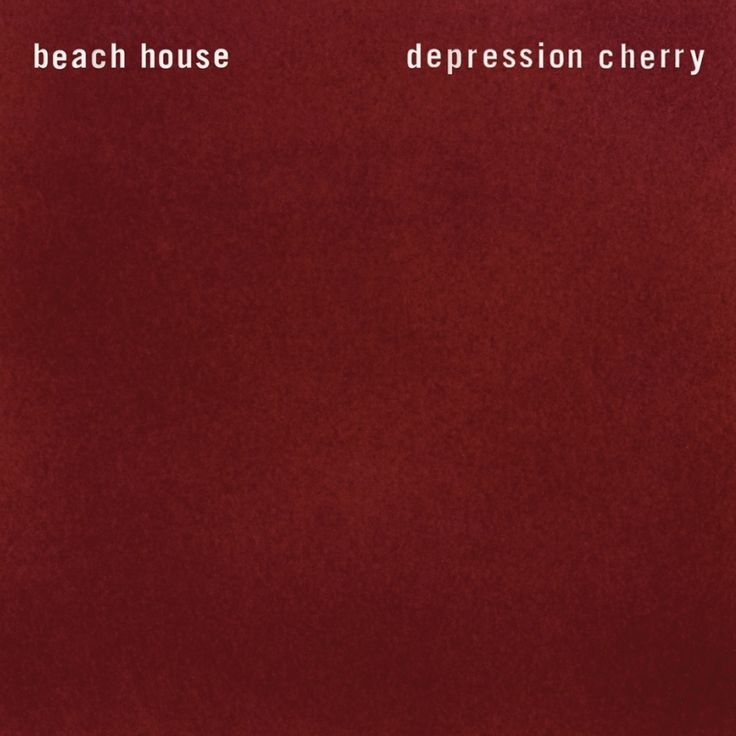
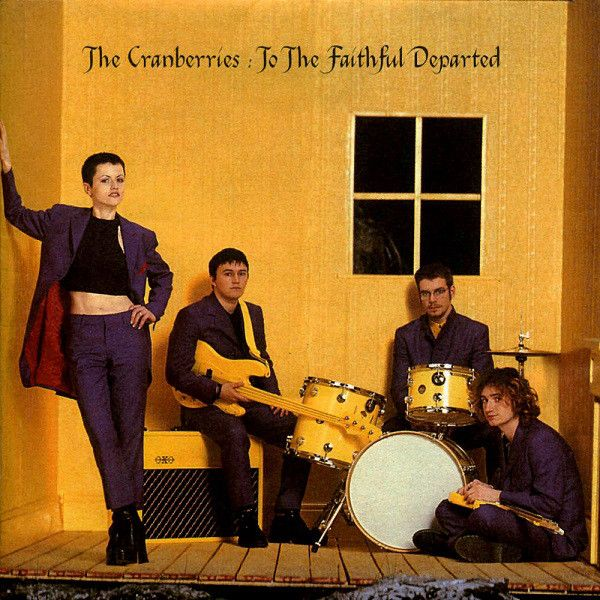
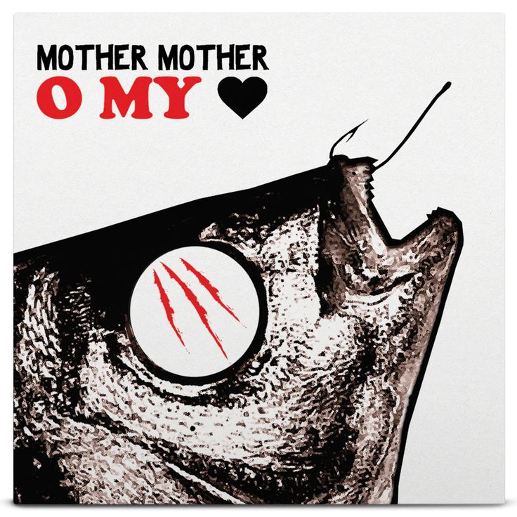
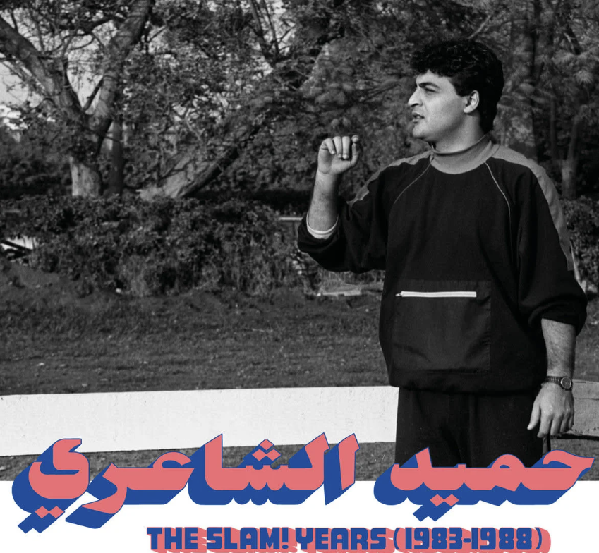
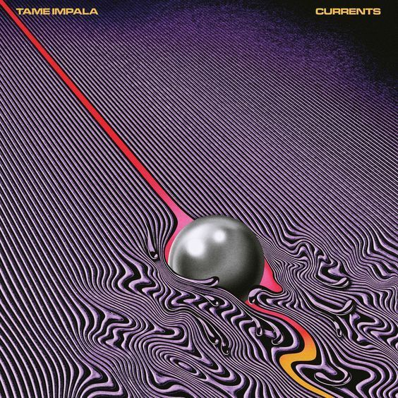
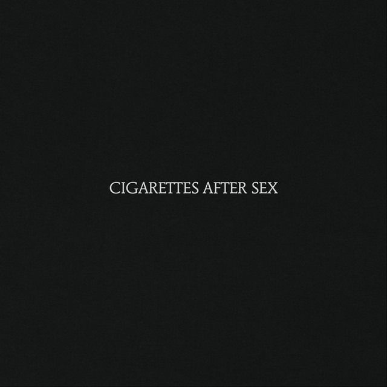
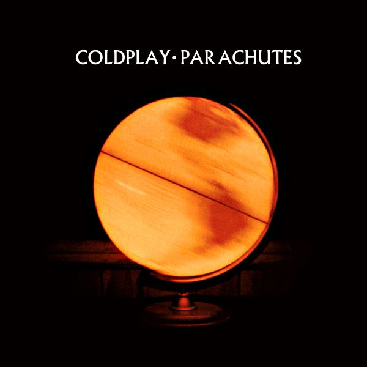
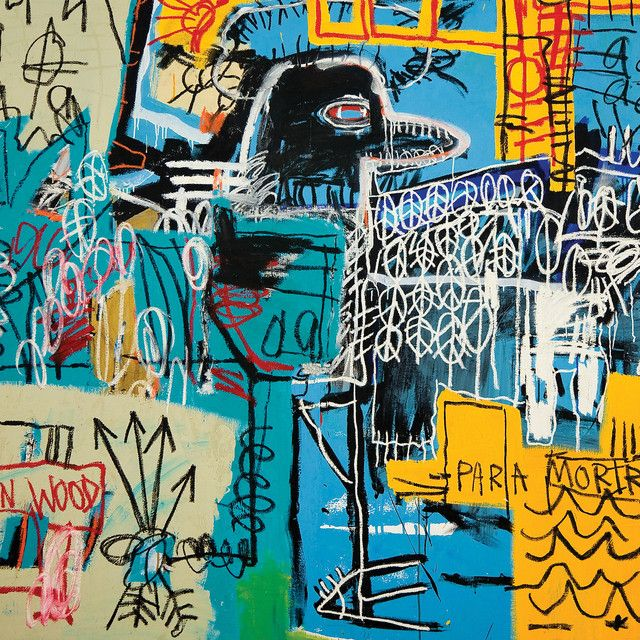
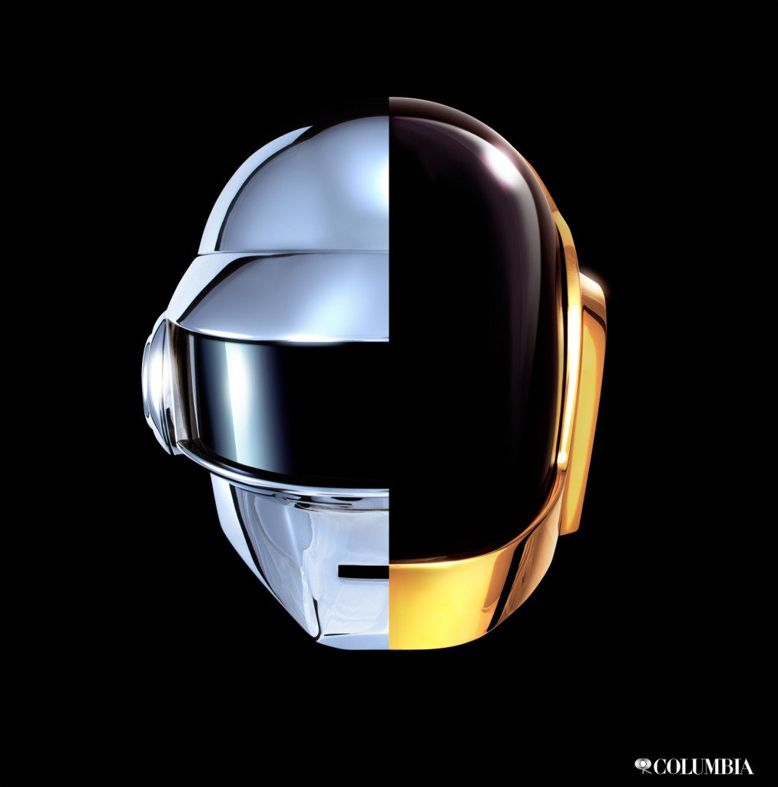
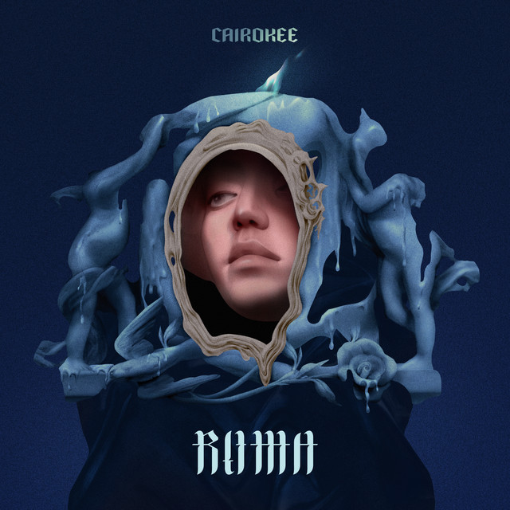

Here's a collection of songs that mean a lot to me.
Every song here holds a special memory.
I still listen to the same artists as I did in high school.
The first 'Beach House' song I ever heard was 'Space Song'.
This brings back so many highschool memories. During lockdown when school was remote, 'Space Song' accompanied me as I made Quizlet flashcards for my AP Pyschology exam.
I used to fixate on a few songs, so I never really explored their full discography until my sophomore year of college.
That's when I discovered my new fav song from them called 'PPP'.
Beach House's ethereal sound never fails to tug at my heart strings
Currently listening to 'Silver Soul' as I type this :P
Another favorite is 'The Cranberries'. I have so many favorites from them, but one song that really stood out to me was 'When You're Gone.'
I had to include 'Mother Mother'. I attended their concert last july and I think it made me love them even more
This album has so many of my favorite Mother Mother songs.
'Burning Pile', 'Arms Tonite', 'Sleep Awake', 'Wrecking Ball'
Hamid El Shaeri is a very talented singer, songwriter, and producer.
A remix of his song 'Ouda' suddenly became very popular on Tiktok.
I love listening to 'Ouda', but I find that Hamid has so many other songs that I love even more.
I'm constantly discovering more of his music. My current favorites being 'Dari Damouak' and 'Ya Reit.'
Hamid is a very important figure in Arabic Pop and he has been around since the 80s and composed a lot of hits for many artists such as Amr Diab
It's nice to see him finally getting the recognition he deserves.
I love every single song Tame Impala has released
the best seven minutes and fourty six seconds are those spent listening to 'Let It Happen'
it may be tempting to skip the chorus ... but trust me when I say that each part of the song is worth listening to.
Another honorable mention is 'The Less I Know the Better.'
It's Tame Impala's number one song on Spotify with over 1.8 billion views.
With just one click, I'm suddenly fourteen again, listening to that song.
I don't even know where to begin...
'Cigarettes After Sex' is ,without a doubt, my favorite band. No matter how many artists I come across,
there's something about their music that remains so distinctive and beautiful
Listening to their music feels like a warm hug, a comforting shoulder to lean on.
The first ever CAS song I ever heard was 'Apocalypse.' I remember being so hypnotized by it. It was, and still is, a very beautiful piece of art.
Back then, I'd strictly listen to 'Space Song' and 'Apocalypse' whenever I studied
During orientation week, when I was still getting to the area near Tandon, I stumbled upon the McNally Jackson bookstore in CityPoint.
That's when I found my next favorite cas song: Touch
The music was playing so faintly, and I remember desperately hoping my phone's song detection would work . I didn't want to lose the song
'Touch' later became a staple in my song rotation during my first semester in college, Spring 2024.
'You're All I want', 'John Wayne', 'Motion Picture Soundtrack', 'Heavenly', and 'K.' are some of my favorites.
I'm a little biased when it comes to 'K' bc its my intial <3
Speaking of McNally Jackson, I stumbled upon ‘Trouble’ by Coldplay while browsing the books there, and it quickly became part of my playlist
A lot of Coldplay's songs have sentimental meanings to me.
'Clocks' was played in my highschool graduation video where we showcased our memories as a class
'Hymn for the Weekend' reminds me of my childhood because I listened to this song with my siblings and my childhood best friends
'Trouble' is part of my freshman year soundtrack
I love 'The Strokes'
Some of my favorite songs are 'Ode to the Mets', 'Selfless', 'Call it Fate, Call it Karma', and 'Is this it'
I was first introduced to 'The Strokes' during high school when I listened to their song called 'The Adults are Talking.'
But it wasn't until last spring when I explored more of their music.
I only recently realized that Daft Punk had a hand in so many of my favorite songs.
They either featured them or were produced by them.
songs like 'Get Lucky' and 'Starboy' were associated with Daft Punk
Though last September was when my fixation on their music began,
specifically when I heard the song 'Instant Crush' which featured 'The Strokes'' lead singer Julian Casablancas.
I love 'Instant Crush', 'Infinty Repeating', and 'Giorgio by Moroder.'
Cairokee is an Egyptian Rock band that gained prominence in recent years
Cairokee's music has been so inspiring, espcially their album 'Roma'
Roma features all of my fav songs from them, including 'Basrah w Atooh', 'Roma', and 'Ana Negm'
They're genuinely one of my favorite bands and I'm so glad I got to see them live in my hometown
Experiencing their music live deepened my love for their songs, I really recommend their music